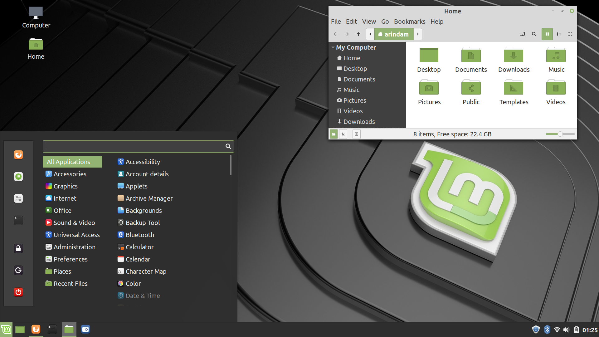
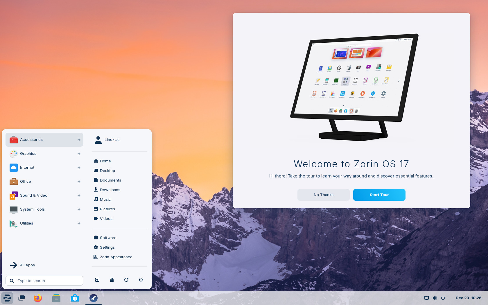
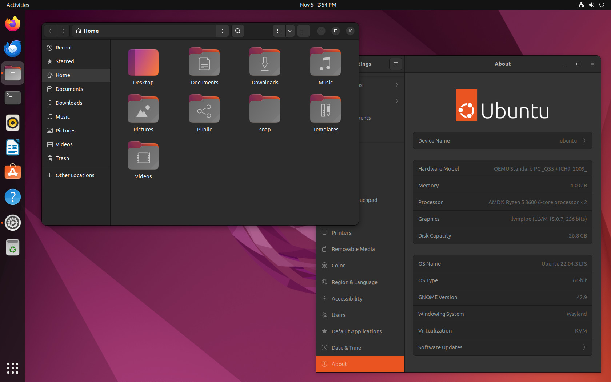
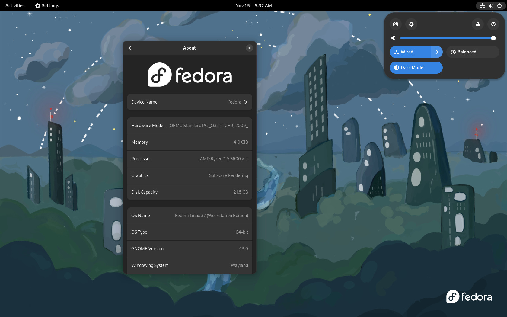

Przegląd popularnych dystrybucji
Zobacz, jak wyglądają domyślne środowiska graficzne w systemach polecanych dla początkujących. Wybierz ten, który najbardziej Ci się podoba!

Linux Mint
Najbardziej polecany dla początkujących. Z wyglądu i zachowania bardzo przypomina klasycznego Windowsa, co sprawia, że przesiadka jest bezbolesna.
Poradnik instalacji
Zorin OS
System stworzony z myślą o estetach. Jest niesamowicie dopracowany wizualnie i pozwala łatwo upodobnić wygląd do Windowsa lub macOS.
Poradnik instalacji
Ubuntu
Najpopularniejsza dystrybucja na świecie. Posiada ogromną społeczność, co oznacza, że jeśli napotkasz jakikolwiek problem, rozwiązanie na pewno jest już w sieci.
Poradnik instalacji
Fedora
Nowoczesny i bardzo stabilny system, z którego chętnie korzystają programiści. Oferuje zawsze najnowsze oprogramowanie i czyste środowisko GNOME.
Poradnik instalacjiZobacz, jak łatwo zmienić system
Przesiadka na Linuksa nie musi być trudna, a usunięcie poprzedniego systemu to proces, który zajmuje tylko chwilę. Zobacz krótki materiał wideo pokazujący, jak to wygląda w praktyce.
Źródło materiału: YouTube
Przeczytaj krok po kroku: Jak bezpiecznie odinstalować Windowsa
Dla ambitnych: Linux From Scratch